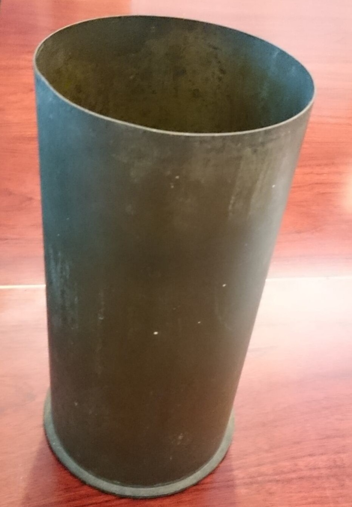
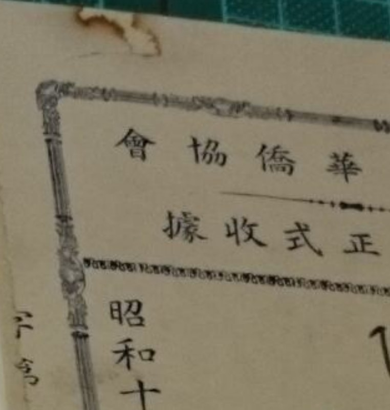

Rust
Rusted pin used to hold papers today. Even after removal, it will leave rust stains on the paper
Signs of stable oxidation on the surface of this metallic shell casing
Rust stains left behind by a previous clip at the top of this document
Description
Coating or film on metal caused by oxidation. The term is predominately used to describe the reddish, brittle coating that forms on the surface of iron and iron alloys due to the metal's oxidation in the presence of water or moisture. This coating is composed of iron oxide (Fe2O3) and hydrated iron oxide (Fe2O3·nH2O3). While metal is the primary material it affects, rust is brittle and flaky and may leave stains on the other medium the metal comes in contact with.
Treatment Notes
- If not essential for the artefact, remove the fastener causing the rust damage and do surface cleaning.
- For metallic objects, removal of the rust may cause structural damage and should only be undertaken if deemed necessary and after analysis of the extent of rust
Materials Affected
Metal